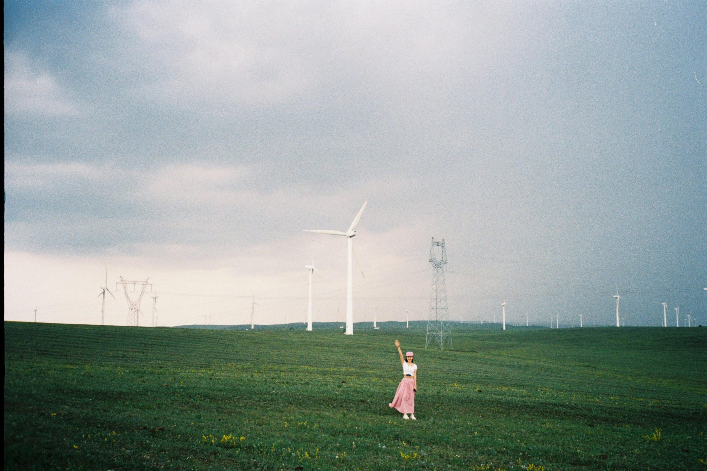

總是對「甜心」忘不了？別擔心，這很正常。在包養文化中，許多人都會情不自禁地思念某個人，不斷想起他的笑容、對話，甚至是小小的習慣。即使明知道這段關係只是包養網上的安排，心情還是很難不受影響。
有時候我們花太多時間回想那些細節，反而困住了自己。想停止對一個人的喜歡，其實可以從改變小習慣做起。接下來會分享一些簡單、實用的方法，幫助你慢慢放下，重新過好每一天。
認清自己的感受，接受分離帶來的情緒
經歷包養、在包養網認識「甜心」之後，想要放下對他的一切不是說忘就能忘。這時候，最重要的一步，就是先誠實面對自己的情緒。承認自己正在經歷的失落和不安，才是真的開始為自己療癒。很多人害怕孤單，習慣把所有注意力放在「甜心」的每個動作、每句話，反而讓自己陷在反覆想念的漩渦裡。接下來，我會分享如何從感受出發，慢慢接受分離帶來的複雜情緒。
誠實面對自身的孤獨與不安
孤獨感來的時候，就像夜深房間特別安靜，心裡什麼聲音都放大。這種感覺很真實，不用假裝自己「很堅強」或「無所謂」。我經歷過的那種空缺，就像一場下雨天，雖然會濕，但也提醒我：我曾經付出過。
- 承認自己的情緒：不論是難過、後悔，還是嫉妒其他包養網上的人，都非常正常。
- 和情緒相處，不去壓抑：給自己一點空間，允許偶爾想他、偶爾難受，這不代表就永遠走不出來。
- 寫下感受：有時候寫日記，直接把想念和難過都寫出來，能讓心裡清楚許多。
這一路，沒有人能一夜之間什麼都放下，別對自己太嚴苛。
給自己一段療癒的時間
很多人分開後，習慣用工作、社交、追劇把時間塞滿，只為讓自己暫時不去想「甜心」。但事實上，給自己一段沒壓力的療癒時間，比什麼都重要。
- 安排自己的日子：不用硬要讓每一天都完美，簡單地去散步、泡杯茶，為自己而活。
- 尋找新興趣：試著學習一樣新事物，把注意力帶回當下，像找回生活的節奏。
- 和信任的朋友聊天：說出心事，不用怕被笑，大家都曾有過差不多的經歷。
有時候，哪怕只是靜靜地看著窗外發呆，也是療癒的一種。別急，一天過一天，慢慢就能從那個影子裡走出來。

Photo by Klub Boks
每個人遇到包養這些情感放下的問題，都不孤單。慢慢來，先學著抱緊自己，療癒就會發生。
建立新生活圈，減少舊情感的牽絆
我們常常以為「放下」只能靠時間，實際上，主動參與生活、創造新的人際關係會更有效。舊有的「甜心」連結與包養文化中的依賴，不知不覺吞噬了我們的生活重心。如果想真正走出包養網上的感情陰影，最有用的方法就是：主動去認識新朋友，多參與活動，並把專注力拉回自己身上。慢慢地，你會發現，舊情感的影響會隨著新的人生經歷而變淡。
多認識新朋友，嘗試不同的社交活動
離開一段關係後，身邊的世界其實遠比想像更大。有時候只是找不到出口，才會一再回憶包養網上「甜心」的點點滴滴。事實上，新朋友、新圈子就是最好的解藥。
- 參加運動社團或烹飪課，像孩子一樣對新事物保持好奇。
- 主動聯絡老朋友，約出來喝杯咖啡，聊聊彼此近況。
- 透過興趣小組、工作坊、志工活動，把自己帶進全新的生活環境。
- 假日可以散步、看展覽，讓自己的世界不再只有「他」。
多參與社交活動，不只是填滿空白，更是在重建自己的生活主場。當新朋友和新經歷進入生活，對於包養的牽掛會自然減弱。過一段時間回頭看，會發現其實沒有誰是人生的全部。
Photo by Johnny Song
專注於自己興趣愛好
與其反覆想著包養網上的「甜心」，不如把那份熱情轉向自己。每個人心裡都有一片專屬的園地，只等你親手栽種。投入喜歡的事，心就不再被過去牽著走。
這些方法能幫忙轉移注意力：
- 重拾因愛情忽略的興趣，例如繪畫、攝影、打球或閱讀小說。
- 設定目標，比如一個月內學會新菜，或完成短程旅行。
- 嘗試從未體驗的事物，比如學樂器、種植盆栽，讓新體驗充實日常。
有時候我會發現，某些熱愛一旦投入，就像清晨喝下一杯熱咖啡，整個人會變得精神又有目標。專注自己的成長，讓生活變得有意義，舊感情自然不再困擾。
養成主動參與生活的習慣，不再讓包養文化的牽連牽制你。當你的世界開始豐富起來，情感的重心會慢慢回到自己身上。
包養文化下的感情流動：學會看淡關係的轉變
在包養文化中，表面上像是「甜心」和「贊助者」的簡單搭配，但實際每個人投入的感情都真切又複雜。當一段包養關係改變或結束，心裡的失落可能比想像更深。這個世界變動很快，從社交平台到包養網，感情也像水流一樣四處移動。有時候我們忘記了這些關係本來就有浮動性，只是太容易讓自己綁在一個人身上。所以，學會用不同角度去看待「甜心」和金錢背後的情感流動，是放下的關鍵。
理解包養網上的角色定位
包養網上的關係，大多比一般戀愛來得單純和直接。大家彼此有共識：一方提供資源，一方付出陪伴或關注。這樣的結構讓每個角色都很明確，卻也有它的限度。
- 金錢與情感分開：在包養網上，金錢是基礎，感情常常成了附加品。你以為的在乎，其實可能只是禮貌和互動。
- 「甜心」只是其中一個角色：對方願意花時間陪你，不代表他投入全部心意。這是一種貼近現實的交換，不等同於全心全意的愛情。
- 關係是流動的：包養不是永恆承諾，而是隨時可能結束的合作。角色可以互換，也可能很快消失在彼此的名單中。
真正理解這種定位後，我慢慢學會不要把對方的每一個舉動，都當作是專屬自己的情感投入。這不是愛情的全部，反而像合約裡的一行條款，履行完就各自回到原點。
Photo by Vitaly Gorbachev
調整對感情的期望值
包養文化下的感情確實可以讓人感到溫暖，但也要認清它的「有效期限」。很多時候，是我們把關係想得太浪漫、太單純，把對方幻想成獨一無二的存在。
調整期望的一些小提示：
- 承認現實：這份關係不是純愛劇，也沒有誰欠誰一生。每個人都有選擇和退出的自由。
- 不再強求完整的歸屬感：不用期待「甜心」會成為你人生永遠的依靠。就像季節更替一樣，有些人只會在特定時期出現。
- 把投入的熱情分散：把時間和精力分給自己、朋友和興趣，不再單壓在這段不穩定的關係上。
- 懂得放下，不再執著於過去細節：每次糾結「他上一條訊息回了多久」或「那天的眼神是不是有特別含義」，都會讓自己陷進死胡同。
把包養當作人生中的一場短暫旅程，會輕鬆很多。有時候，關係的轉變不代表失敗，只是時間到讓自己前行。慢慢調整自己心裡的「理想感情觀」，反而會找到更真實的自己，也比較容易和這個包養流動文化和平共處。
重新認識自己，培養自信與獨立
經歷包養關係後，把專注力慢慢移回自己，其實是一場全新的開始。過去可能太習慣身邊有「甜心」的陪伴，習慣討好他、遷就他，甚至把自己的價值和快樂都綁在對方身上。現在，我們要嘗試習慣一個人的生活，重新整理內心的秩序和安全感。這不只是放下包養網上的那個人，更是學會肯定自己，找回獨立做人、享受生活的力量。
接受自己的選擇，放下過往經歷
沒有人可以把過去完全擦掉，特別是在包養文化中，「甜心」留下的點滴總讓人意亂情迷。剛開始習慣一個人時，心裡難免動搖，但接受自己曾經的選擇，就是給自己一個公平的起點。
我常提醒自己：
- 過去的經驗只是人生的一部分，不等於全部
- 當時的決定有它的理由，不需要苛責自己
- 每一段經歷都是成長的一環，不論結果如何
這種放下不是要你假裝不在乎，而是學著和自己和解。當然，失落和懷念會出現，但別急著推開它。給它們一個空間，靜靜陪自己度過。時間久了，就會慢慢鬆開那些抓得緊緊的回憶。
提升自我價值感與生活滿足感
把注意力從「甜心」身上移開後，更要學會如何看重自己。提升自信和獨立的感覺，其實來自生活裡的一點一滴。最簡單的做法，就是靠日常的小行動慢慢堆疊。

Photo by yating yang
以下是我自己也會實踐的方法：
- 培養一個屬於自己的習慣：每天花一點時間運動、閱讀、寫日記，給生活安排一點小確幸。
- 設定簡單可達成的小目標：不必一口氣變超級厲害，能做到每天進步一點就很足夠。
- 欣賞自己微小的成就：就算只是把早餐做得特別好、工作完成得更有效率，也值得對自己說聲「做得好」。
- 學會拒絕和選擇：勇敢說不，把時間和情感留給重要的人和事。
生活中，當我學會自己獨處，開始享受那種安靜、自在的片刻，就會發現：原來不用和其他人在一起，也可以過得很好。每個人都值得擁有屬於自己的快樂和自信，而這一切，都從重新肯定自己開始。
這條路沒有人能一步到位，但只要開始行動，慢慢地就能真正把重心拉回自己身上。
結論
每段和「甜心」的故事、在包養網上的經歷，都是我成長的養分，沒有誰能輕易說忘就忘。放下過去，並不代表遺忘，而是珍惜走過的每一步，學會把注意力拉回自己，重新感受日常的溫度。
我願意繼續相信，每一次心動、每一次失落，都是讓我更靠近真實自我的過程。包養文化下的愛情，雖然短暫卻也值得被好好記住。
謝謝你走到這裡，也許現在的我還在學習，但我知道未來一定能更自在地面對感情轉變。希望你也能帶著溫柔和勇氣，和我一起迎接屬於自己的新章節。如果願意，歡迎在留言區分享你的感受，讓我們一起成為彼此的力量。